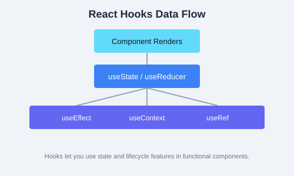

As your application grows, passing state through many levels of components (prop drilling) becomes cumbersome. State management libraries provide a central place to store and mutate shared state.
Flux is an architectural pattern introduced by Facebook. Data flows in a single direction: Action → Dispatcher → Store → View. A user action (click, input) dispatches an action object to the store, which updates itself and notifies the view to re-render.

React's built-in createContext and useContext allow you to share values without prop drilling. It is ideal for global data like themes, locale, or current user.
import { createContext, useContext } from "react";
const ThemeContext = createContext("light");
function App() {
return (
<ThemeContext.Provider value="dark">
<Toolbar />
</ThemeContext.Provider>
);
}
function Toolbar() {
const theme = useContext(ThemeContext);
return <div>Current theme: {theme}</div>;
}useReducer to mimic Redux-like behavior without external libraries.Redux is the most popular state management library. It follows the Flux pattern strictly: a single store holds the entire state tree, actions describe what happened, and reducers specify how the state changes.
// Action
const increment = () => ({ type: "counter/increment" });
// Reducer
function counterReducer(state = { count: 0 }, action) {
switch (action.type) {
case "counter/increment":
return { count: state.count + 1 };
default:
return state;
}
}
// Store
import { createStore } from "redux";
const store = createStore(counterReducer);
// Dispatch
store.dispatch(increment());
console.log(store.getState()); // { count: 1 }The connect HOC maps state and dispatch to component props.
import { connect } from "react-redux";
function Counter({ count, increment }) {
return <button onClick={increment}>{count}</button>;
}
const mapStateToProps = (state) => ({ count: state.count });
const mapDispatchToProps = { increment };
export default connect(mapStateToProps, mapDispatchToProps)(Counter);Redux Toolkit is the modern, opinionated way to write Redux. It eliminates boilerplate with configureStore and createSlice.
import { configureStore, createSlice } from "@reduxjs/toolkit";
const counterSlice = createSlice({
name: "counter",
initialState: { count: 0 },
reducers: {
increment(state) { state.count += 1; },
decrement(state) { state.count -= 1; },
},
});
export const { increment, decrement } = counterSlice.actions;
const store = configureStore({
reducer: { counter: counterSlice.reducer },
});createAsyncThunk for side effects, createEntityAdapter for normalized data, and DevTools out of the box. It is now the recommended way to write Redux.Zustand is a minimalist state management library with a hook-based API. No providers needed.
import { create } from "zustand";
const useStore = create((set) => ({
count: 0,
increment: () => set((state) => ({ count: state.count + 1 })),
}));
function Counter() {
const { count, increment } = useStore();
return <button onClick={increment}>{count}</button>;
}Recoil is a state management library by Meta that uses atoms (units of state) and selectors (derived state). It integrates deeply with React's concurrent features.
import { atom, useRecoilState } from "recoil";
const countAtom = atom({
key: "count",
default: 0,
});
function Counter() {
const [count, setCount] = useRecoilState(countAtom);
return <button onClick={() => setCount(count + 1)}>{count}</button>;
}| Tool | Best for |
|---|---|
| Context API + useReducer | Small apps, low-frequency updates, simple global state |
| Redux / Redux Toolkit | Large apps, complex state logic, mid-to-large teams |
| Zustand | Medium apps, minimal boilerplate, hook-native APIs |
| Recoil | Apps needing derived state and concurrent mode compatibility |
cartSlice with addItem, removeItem, and clearCart reducers.Provider.Cart component that displays items and totals from the store.ProductList component that dispatches addItem on button click.